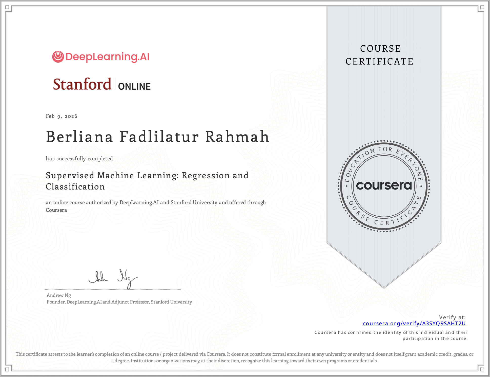
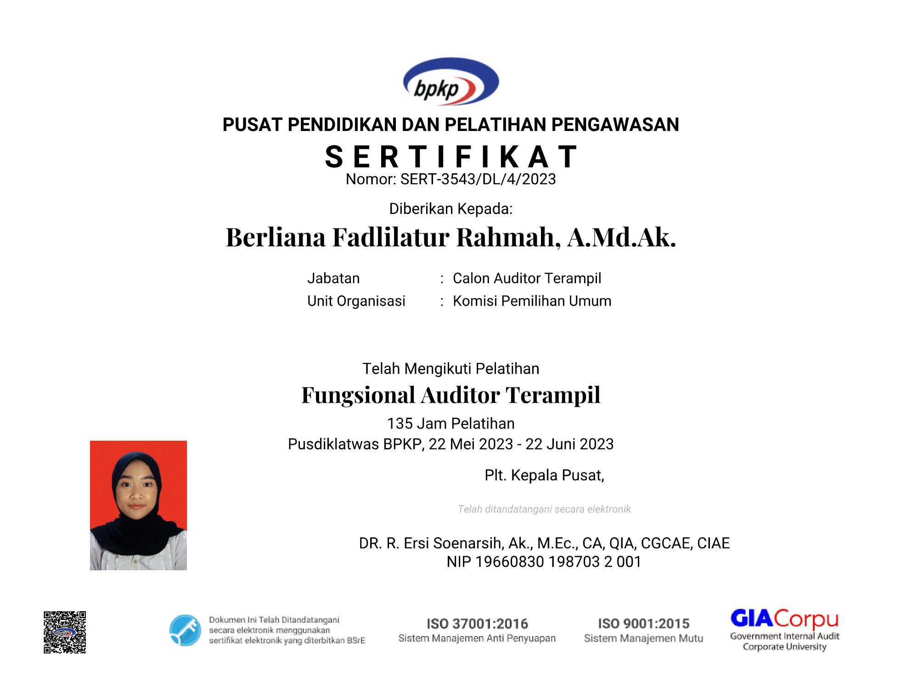
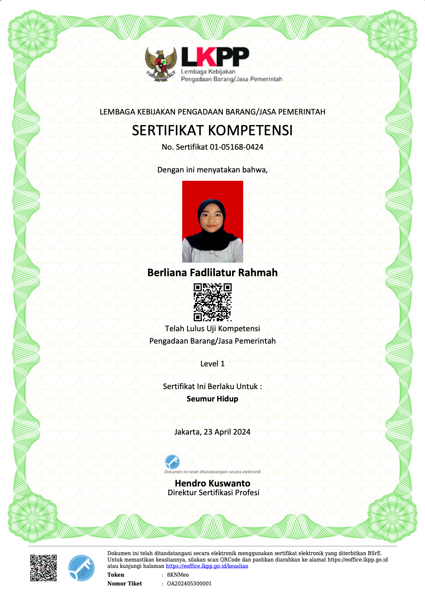
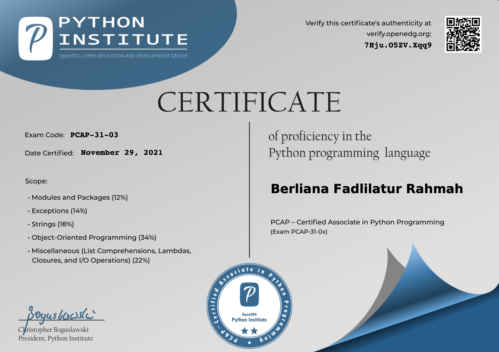

Hi, I'm Berliana.
I connect the dots between technology, operations, and assurance, applying data analytics and machine learning to solve real-world problems.
Get to know meData & Technology | Business Operations
Risk & Assurance
Data-driven professional with 4+ years of experience at Indonesia’s General Elections Commission (Komisi Pemilihan Umum/KPU) across internal audit, procurement, logistics, and election analytics. An Information Systems graduate from BINUS University and author of machine learning research on corporate credit risk, accepted for publication in Scopus-indexed proceedings. Bridges three key areas: IT (data analytics and machine learning), operations (logistics, procurement, and accounting), and assurance (audit and risk management), connecting technical knowledge with practical experience to solve cross-functional problems.
Technical Skills
- Data Analytics & Machine Learning
- Python SQL Microsoft Excel Google Sheets Google Colab Scikit-learn XGBoost LightGBM SHAP Google Apps Script
- Data Processing & Automation
- Data Cleaning Data Validation Data Analysis Workflow Automation Reporting Automation
- Operations & Supply Chain
- Logistics Monitoring Supply Chain Risk Management Procurement Planning Budget Estimation Cost Analysis Vendor Evaluation
- Audit & Risk Management
- Internal Control Assessment Risk Assessment Regulatory Compliance Financial Reconciliation Transaction Vouching Audit Documentation
- Systems Analysis & Design
- UML Modeling Business Requirements Analysis Workflow and Process Modeling
Currently Done
Experience
Election Technical Affairs Officer, KPU East JavaApril 2026 to presentGoogle Apps ScriptGemini APIGoogle SheetsSainte-LaguëData Analysis
- Analyzed East Java voter data to determine electoral district (dapil) requirements and support district design simulations.
- Developed a dynamic seat-allocation tool using the Sainte-Laguë method for 18 political parties across 11 DPR and 14 provincial DPRD districts, cutting processing time from days to hours.
- Administered legislative replacement (PAW) processes for the East Java Provincial DPRD and monitored progress across 38 regencies/cities.
- Facilitated electoral discussions with administrators, academics, and other stakeholders.
Logistics Monitoring and Evaluation Officer, KPU Logistics Bureau, JakartaJuly 2024 to April 2026Microsoft ExcelData ValidationSupply Chain Risk ManagementLogistics MonitoringReporting
- Compiled and analyzed logistics data from 552 work units (38 provinces and 514 regencies/cities) for nationwide consolidated reporting.
- Designed a centralized logistics monitoring system with standardized formats and input validation, replacing inconsistent manual Excel files.
- Mapped supply chain risks across 5 zones and 20 risk categories, identifying the top 4 risks per zone and nationally with zone-specific mitigation recommendations.
- Contributed to the initial 2029 Election Logistics Roadmap by defining business processes, outputs, steps, and deadlines.
Procurement Officer, KPU Logistics Bureau, JakartaJuly 2023 to July 2024Procurement PlanningBudget EstimationCost AnalysisMarket Price Survey
- Planned nationwide logistics procurement for the 2024 General Election: 204.8 million registered voters, 820,161 polling stations, 10 logistics categories.
- Contributed to regional zoning and centralized procurement with LKPP, supporting efficiency of approximately Rp381 billion.
- Conducted nationwide market price surveys and prepared Estimated Costs (HPS) for designated zones.
- Monitored production of approximately 1.2 billion ballot sheets for compliance with specifications and quality requirements.
Internal Auditor, KPU, JakartaJanuary 2022 to July 2023Internal Control AssessmentRisk AssessmentRegulatory ComplianceFinancial Reconciliation
- Reviewed semiannual financial statements and reconciled cash balances and imprest funds.
- Advised regional work units on financial management, regulatory compliance, and internal controls.
- Supported development of risk management regulation PKPU No. 8 of 2023 through research, stakeholder discussions, and socialization materials.
Audit Intern, AR Utomo Public Accounting Firms, SurabayaSeptember 2021Audit Working PapersTransaction VouchingReconciliation
- Prepared audit working papers and performed transaction vouching and reconciliation to identify discrepancies.
Student Intern, Directorate General of TaxesMarch to June 2021Microsoft ExcelTax AuditReconciliationQuality Assurance
- Supported tax audits by reviewing financial records, preparing working papers, and reconciling ledger and bank data in Excel.
- Evaluated audit quality assurance procedures against SOPs and recommended process improvements.
Research & Publications
Comparative Study of Predictive Models for Non-Performing Loan Prediction in a P2P Lending Company
Code and processed dataset on Zenodo
The 2nd International Conference on Artificial Intelligence for Learning and Optimization (ICoAILO 2026), October 2026, paper presenter. To be published in Scopus-indexed conference proceedings.
- Compared Logistic Regression, Decision Tree, Random Forest, XGBoost, and LightGBM on 578 corporate loan records with 17 scorecard features and an NPL rate of 8.7%.
- Handled class imbalance with stratified 5-fold cross-validation, class weights, and threshold tuning.
- Selected the model by misclassification cost, since a missed bad loan costs about 4.5 times more than a false alarm. XGBoost performed best.
- SHAP showed year-over-year revenue growth, payor type, and past-due receivables as top risk drivers. Financial factors made up 53% of model importance despite 20% of the original scorecard weight.
Education
Bina Nusantara University (BINUS), B.Comp.Sc. Information SystemsAugust 2024 to October 2026, RPL (Diploma-to-Bachelor) program
- Focus: data analytics and machine learning, systems analysis and design, UML modeling, business requirements analysis, project management.
- Thesis: Non-Performing Loan (NPL) prediction using machine learning, comparing five models on real corporate loan data and selecting the best by misclassification cost.
Polytechnic of State Finance STAN, A.Md.Ak. AccountingSeptember 2018 to October 2021
- Focus: financial accounting, government accounting and compliance, cost accounting, product pricing, auditing.
- Final project: cost of production analysis at a bakery, applying process costing and recommending improvements to cost classification, recordkeeping, and pricing.
Licenses & Certifications

Supervised Machine Learning: Regression and Classification
DeepLearning.AI, Stanford University
View credential
Certified Skilled Auditor
Financial and Development Supervisory Agency /
Badan Pengawasan Keuangan dan Pembangunan (BPKP)

Government Procurement Certification
National Public Procurement Agency /
Lembaga Kebijakan Pengadaan Barang/Jasa Pemerintah (LKPP)
